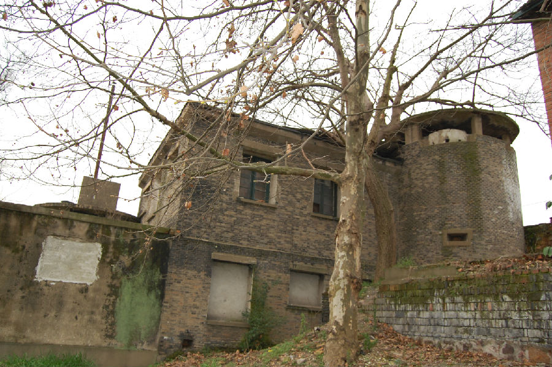

嘉兴市文物保护网 · 市级文物保护点 · 2020-11-06 · 原文

王店老火车站碉堡及附属房位于嘉兴市秀洲区王店镇梅溪社区王店老火车站。据碉堡旁老居民回忆铁路为英国人建造，2个碉堡及1个附属房为日军侵华时期建造。三个建筑物呈“一”字排开，皆为砖混结构，占地面积72平方米。西侧的碉堡呈圆筒形，直径3.8米，高5.2米；中间的附属房共两层，呈边长为7.1米的正方形，高6.2米；东侧的碉堡呈圆筒形，直径3.8米，高4米。目前因铁路提速王店车站停办，碉堡和附属房亦一并停用。碉堡及附属房是日军侵略中国留下的铁证，具有较高的历史价值。2009年公布为嘉兴市文物保护点。